RAW Time-Signal Measurements
Loading
[1]:
# Basic Plotting libraries
import matplotlib.pyplot as plt
import matplotlib
import seaborn as sns
from mpl_toolkits.axes_grid1.inset_locator import inset_axes
# Math / Science Libraries
import pandas as pd
import numpy as np
import scipy
import logging # System Modules
import re # Regular Expressions
from glob import glob
logging.basicConfig(level=logging.WARNING)
# Plotting parameters
params = {
'figure.dpi': 300,
'figure.figsize': (20,15),
'figure.subplot.hspace': 0.3,
'figure.subplot.wspace': 0.3,
'savefig.transparent': False,
'savefig.bbox': 'tight',
'savefig.pad_inches': 0.1,
}
matplotlib.rcParams.update(params)
logger = logging.getLogger('EVA-SR830DAQ')
%load_ext autoreload
[2]:
import os
os.chdir('../../ana')
os.getcwd()
[2]:
'/Users/jp/Projects/Code/lab-book/ana'
Reload Modules
[3]:
%reload_ext autoreload
%autoreload 1
logging.basicConfig(level=logging.DEBUG)
import ana
from spectrumanalyzer import SpectrumAnalyzer
Define Functions
[4]:
default_styling = [['science'], {'context': 'paper',
'style': 'dark',
'palette': 'bright',
}]
def set_style(styling=default_styling):
plt_style, sns_style = styling
plt.style.use(*plt_style)
sns.set(**sns_style)
set_style()
Plot Spectrum Hysteresis
[5]:
def plot_spectrum_hyst(nr1, nr2, **kwargs):
meas = {}
meas[0] = mfn_measurements[nr1].measurements
meas[1] = mfn_measurements[nr2].measurements
n1, n2 = len(meas[0]), len(meas[1])
sns.set_palette(sns.color_palette("RdBu", n1+n2))
fig, (ax1) = plt.subplots(nrows=1, figsize=(16,10))
colors = 'rb'
for i,nr in enumerate([nr1, nr2]):
c = colors[i]
for field in mfn_measurements[nr].data.sort_values('Field')['Field'].unique():
s = meas[i][field].avg_spec
ax1.plot(field, s.S.sum(), c+'o')
ax1.set_title('$\\sum_f$ Noise Power (m%s Red / m%s Blue)' % (nr1, nr2))
if kwargs.get('log', True):
ax1.set_yscale('log')
Define Variables
Do this only Once! After initialization, these Variables will contain all measurement data and can be used for different evaluations!
[19]:
#df, spec = {}, {}
mfn_measurements = {}
[7]:
def load_meas_info(file='data/mfn_info.csv'):
meas_info = pd.read_csv(file, index_col=0)
meas_info.index.name = 'Nr'
# Drop Measurements where an error occured.
meas_info = meas_info[meas_info['Error'] != True]
meas_info.drop('Error', axis=1, inplace=True)
return meas_info
meas_info = load_meas_info()
meas_info
[7]:
| Struct | Angle | Voltage | Frequency | Temp | Preamp | Rate | Time | Dir | Limit | dB | timeconstant | SR | |
|---|---|---|---|---|---|---|---|---|---|---|---|---|---|
| Nr | |||||||||||||
| 430 | Plusses | 45 | 2.5 | 17 | 30 | False | 8 | 600.0 | Down | 0.2 | 0.010 | 0.100 | NaN |
| 431 | Plusses | 45 | 2.5 | 17 | 30 | False | 8 | 600.0 | Up | 0.2 | 0.010 | 0.100 | NaN |
| 433 | Plusses | 45 | 2.5 | 113 | 30 | True | 16 | 1024.0 | Up | 0.1 | 0.002 | 0.100 | NaN |
| 434 | Plusses | 45 | 2.5 | 113 | 30 | True | 32 | 512.0 | Up | 0.2 | 0.020 | 0.100 | NaN |
| 435 | Plusses | 45 | 5 | 113 | 30 | True | 16 | 1024.0 | Down | 0.1 | 0.005 | 0.100 | NaN |
| ... | ... | ... | ... | ... | ... | ... | ... | ... | ... | ... | ... | ... | ... |
| 504 | Plusses | 90 | 5 | 113 | 15 | False | 8 | NaN | Up | 0.5/0.75/1.0/1.25/1.5 | NaN | 0.003 | 2 |
| 505 | Plusses | 90 | 5 | 113 | 15 | False | 8 | NaN | Up | 0.5/0.75/1.0/1.25/1.5 | NaN | 0.100 | 2 |
| 506 | Plusses | 90 | 0.5/1.0/1.5/2.0/2.5/3.0/3.5/4.0/4.5/5.0 | 17 | 15 | False | 8 | NaN | Up | 0.1 | NaN | 0.100 | 5 |
| 507 | Plusses | 90 | 5 | 17 | 15 | False | 8 | NaN | Up | 0.025 | NaN | 0.100 | 2/1.5/1/0 |
| 508 | Plusses | 90 | 2.5/3.0/3.5/4.0/4.5/5.0 | 17 | 15 | False | 8 | NaN | Up | 0.1 | NaN | 0.100 | 5 |
66 rows × 13 columns
Load Data
This takes a long time, if calculated for each Measurement meas_info.index! Instead use single numbers!
[20]:
%%time
num = 64
for nr in [446 + _ for _ in range(2)]: #meas_info.index: #
tc = meas_info['timeconstant'].loc[nr]
mfn_measurements[nr] = ana.MFN(nr, timeconstant=tc, equalize_length=False)
CPU times: user 4.64 s, sys: 136 ms, total: 4.77 s
Wall time: 4.98 s
Search data manually
[21]:
mfn_measurements.keys()
[21]:
dict_keys([446, 447])
[22]:
for nr in mfn_measurements.keys():
stat = mfn_measurements[nr].data.groupby('Field').describe()['Vx']
idxmax = (stat['max'] - stat['min']).idxmax()
try:
mfn = mfn_measurements[nr]
mfn.plot_info(show_field=idxmax, numlevels=20)
except Exception as e:
print('Error processing Nr. %s: %s' % (nr, e))
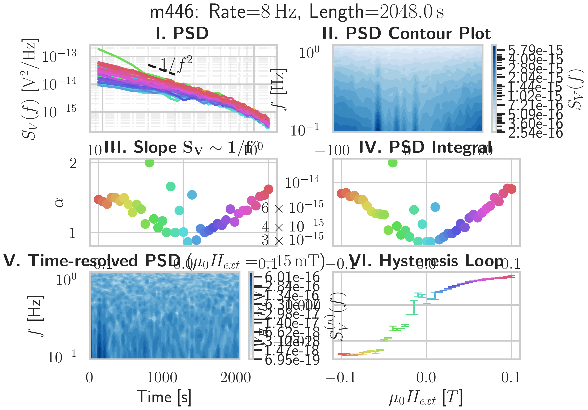
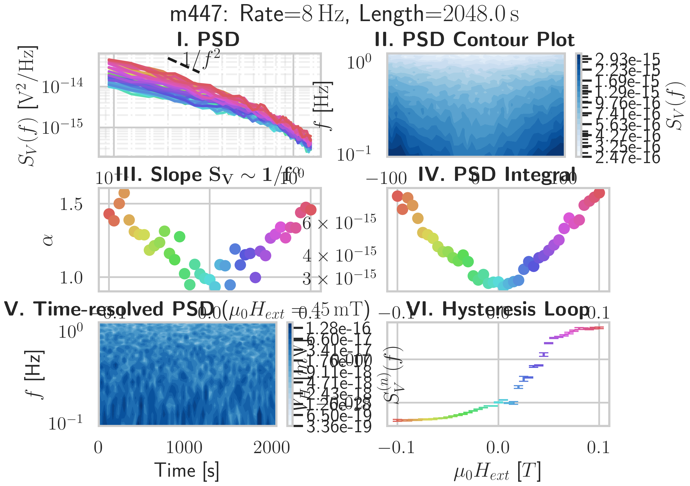
Fit Data
[23]:
df_fit = pd.DataFrame()
for field in np.sort(mfn.data.Field.unique()):
signal = mfn.data.query('Field == @field')
mean = signal.Vx.mean()
signal.loc[:,'fittedVx'] = signal.Vx - mean
df_fit = pd.concat([df_fit, signal])
/opt/homebrew/Caskroom/miniforge/base/envs/metal-tf-3.8/lib/python3.8/site-packages/pandas/core/indexing.py:1667: SettingWithCopyWarning:
A value is trying to be set on a copy of a slice from a DataFrame.
Try using .loc[row_indexer,col_indexer] = value instead
See the caveats in the documentation: https://pandas.pydata.org/pandas-docs/stable/user_guide/indexing.html#returning-a-view-versus-a-copy
self.obj[key] = value
[24]:
sns.violinplot(x="Field", y='fittedVx', data=df_fit)
[24]:
<AxesSubplot:xlabel='Field', ylabel='fittedVx'>
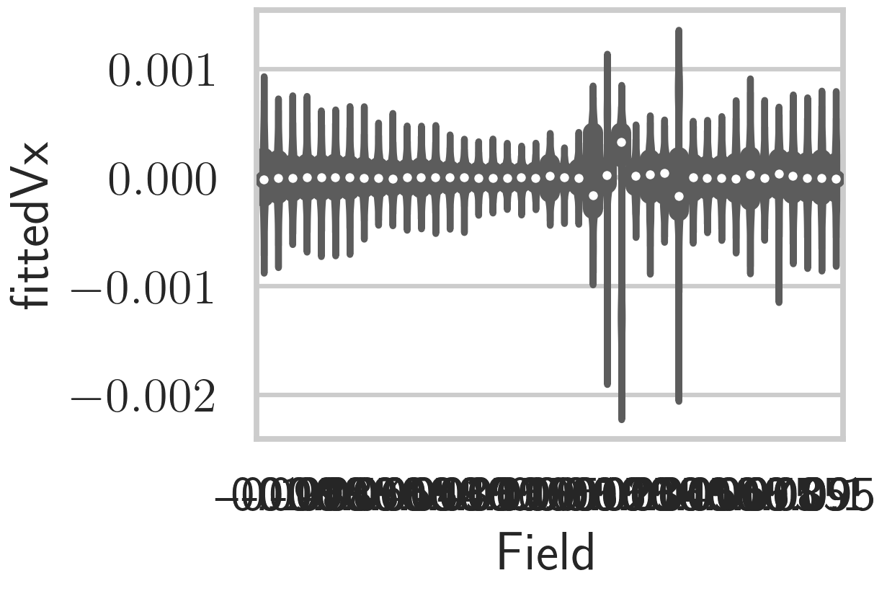
Split Data into Groups (e.g. 5x8)
[25]:
field_groups = df_fit.groupby('Field')
[26]:
neg_saturation = -.2
field_range = .4
steps = 4
df = pd.DataFrame()
for i in range(steps):
stepsize = (field_range/steps)
start = neg_saturation + i*stepsize
end = start + stepsize
df_tmp = df_fit.query('Field >= @start and Field < @end')
df_tmp.reset_index(inplace=True)
df_tmp.loc[:,'Group'] = i
for j, f in enumerate(np.sort(df_tmp.Field.unique())):
df_tmp.loc[df_tmp.query('Field == @f').index,'SubGroup'] = j
df_tmp.loc[df_tmp.query('Field == @f').index,'x'] = df_tmp.loc[
df_tmp.query('Field == @f').index,'fittedVx'] + i*.2
df = pd.concat([df, df_tmp])
---------------------------------------------------------------------------
ValueError Traceback (most recent call last)
/var/folders/nm/0s3x_nnn1ss1n7rd1px5gqsr0000gn/T/ipykernel_33246/2999452645.py in <module>
9 df_tmp = df_fit.query('Field >= @start and Field < @end')
10 df_tmp.reset_index(inplace=True)
---> 11 df_tmp.loc[:,'Group'] = i
12 for j, f in enumerate(np.sort(df_tmp.Field.unique())):
13 df_tmp.loc[df_tmp.query('Field == @f').index,'SubGroup'] = j
/opt/homebrew/Caskroom/miniforge/base/envs/metal-tf-3.8/lib/python3.8/site-packages/pandas/core/indexing.py in __setitem__(self, key, value)
721
722 iloc = self if self.name == "iloc" else self.obj.iloc
--> 723 iloc._setitem_with_indexer(indexer, value, self.name)
724
725 def _validate_key(self, key, axis: int):
/opt/homebrew/Caskroom/miniforge/base/envs/metal-tf-3.8/lib/python3.8/site-packages/pandas/core/indexing.py in _setitem_with_indexer(self, indexer, value, name)
1655 if not len(self.obj):
1656 if not is_list_like_indexer(value):
-> 1657 raise ValueError(
1658 "cannot set a frame with no "
1659 "defined index and a scalar"
ValueError: cannot set a frame with no defined index and a scalar
Function to save plots
[27]:
def save_plot(name, kind='pgf', dpi=None):
if not os.path.exists('img'):
os.makedirs('img')
if kind == 'pgf':
matplotlib.use("pgf")
matplotlib.rcParams.update({
"pgf.texsystem": "pdflatex",
'font.family': 'serif',
'text.usetex': True,
'pgf.rcfonts': False,
})
plt.show()
if dpi == None:
plt.savefig('img/%s.%s' % (name, kind))
else:
plt.savefig('img/%s.%s' % (name, kind), dpi=dpi)
Plot kde of multiple fields
[28]:
factor = 1e3
plt.style.use(['science'])
sns.set('paper', 'white', rc={"axes.facecolor": (0, 0, 0, 0)})
steps = 4
for i in range(steps):
stepsize = (field_range/steps)
start = neg_saturation + i*stepsize
end = start + stepsize
df_tmp = df.query('Field >= @start and Field < @end')
df_tmp.loc[:,'fittedVx'] *= factor
# Initialize the FacetGrid object
pal = sns.dark_palette(color="blue", n_colors=10, input='huls')
g = sns.FacetGrid(df_tmp, row="Field", hue="Field", aspect=5, height=.8, palette=pal)
g.map(sns.kdeplot, "fittedVx", clip_on=True, shade=True, alpha=1, lw=1.5, bw=.2)
g.map(sns.kdeplot, "fittedVx", clip_on=True, color="w", lw=2, bw=.2)
# g.map(sns.distplot, "fittedVx", hist=True, norm_hist=True, hist_kws={'alpha': .5})
g.map(plt.axhline, y=0, lw=2, clip_on=True).set(xlim=(-1.3,1.3))
def label(x, color, label):
ax = plt.gca()
ax.text(0, .3, label, fontweight="bold", color=color,
ha="left", va="center", fontsize=16,
transform=ax.transAxes)
g.map(label, "fittedVx")
# Set the subplots to overlap
g.fig.subplots_adjust(hspace=-.3)
# Remove axes details that don't play well with overlap
g.set_titles("")
g.set(yticks=[])#, xticks=[-100 + 50*_ for _ in range(5)])
g.despine(bottom=True, left=True)
unit = 'mT' if factor == 1e3 else '\\muT' if factor == 1e6 else 'T'
plt.gca().set_xlabel('$V_H$ [$\\mathrm{%s}$]' % unit)
save_plot('m487: histogram_%s' % i, 'png')
---------------------------------------------------------------------------
KeyError Traceback (most recent call last)
/opt/homebrew/Caskroom/miniforge/base/envs/metal-tf-3.8/lib/python3.8/site-packages/pandas/core/computation/scope.py in resolve(self, key, is_local)
199 if self.has_resolvers:
--> 200 return self.resolvers[key]
201
/opt/homebrew/Caskroom/miniforge/base/envs/metal-tf-3.8/lib/python3.8/collections/__init__.py in __getitem__(self, key)
897 pass
--> 898 return self.__missing__(key) # support subclasses that define __missing__
899
/opt/homebrew/Caskroom/miniforge/base/envs/metal-tf-3.8/lib/python3.8/collections/__init__.py in __missing__(self, key)
889 def __missing__(self, key):
--> 890 raise KeyError(key)
891
KeyError: 'Field'
During handling of the above exception, another exception occurred:
KeyError Traceback (most recent call last)
/opt/homebrew/Caskroom/miniforge/base/envs/metal-tf-3.8/lib/python3.8/site-packages/pandas/core/computation/scope.py in resolve(self, key, is_local)
210 # e.g., df[df > 0]
--> 211 return self.temps[key]
212 except KeyError as err:
KeyError: 'Field'
The above exception was the direct cause of the following exception:
UndefinedVariableError Traceback (most recent call last)
/var/folders/nm/0s3x_nnn1ss1n7rd1px5gqsr0000gn/T/ipykernel_33246/4232075178.py in <module>
7 start = neg_saturation + i*stepsize
8 end = start + stepsize
----> 9 df_tmp = df.query('Field >= @start and Field < @end')
10 df_tmp.loc[:,'fittedVx'] *= factor
11
/opt/homebrew/Caskroom/miniforge/base/envs/metal-tf-3.8/lib/python3.8/site-packages/pandas/core/frame.py in query(self, expr, inplace, **kwargs)
4058 kwargs["level"] = kwargs.pop("level", 0) + 1
4059 kwargs["target"] = None
-> 4060 res = self.eval(expr, **kwargs)
4061
4062 try:
/opt/homebrew/Caskroom/miniforge/base/envs/metal-tf-3.8/lib/python3.8/site-packages/pandas/core/frame.py in eval(self, expr, inplace, **kwargs)
4189 kwargs["resolvers"] = kwargs.get("resolvers", ()) + tuple(resolvers)
4190
-> 4191 return _eval(expr, inplace=inplace, **kwargs)
4192
4193 def select_dtypes(self, include=None, exclude=None) -> DataFrame:
/opt/homebrew/Caskroom/miniforge/base/envs/metal-tf-3.8/lib/python3.8/site-packages/pandas/core/computation/eval.py in eval(expr, parser, engine, truediv, local_dict, global_dict, resolvers, level, target, inplace)
346 )
347
--> 348 parsed_expr = Expr(expr, engine=engine, parser=parser, env=env)
349
350 # construct the engine and evaluate the parsed expression
/opt/homebrew/Caskroom/miniforge/base/envs/metal-tf-3.8/lib/python3.8/site-packages/pandas/core/computation/expr.py in __init__(self, expr, engine, parser, env, level)
804 self.parser = parser
805 self._visitor = PARSERS[parser](self.env, self.engine, self.parser)
--> 806 self.terms = self.parse()
807
808 @property
/opt/homebrew/Caskroom/miniforge/base/envs/metal-tf-3.8/lib/python3.8/site-packages/pandas/core/computation/expr.py in parse(self)
823 Parse an expression.
824 """
--> 825 return self._visitor.visit(self.expr)
826
827 @property
/opt/homebrew/Caskroom/miniforge/base/envs/metal-tf-3.8/lib/python3.8/site-packages/pandas/core/computation/expr.py in visit(self, node, **kwargs)
409 method = "visit_" + type(node).__name__
410 visitor = getattr(self, method)
--> 411 return visitor(node, **kwargs)
412
413 def visit_Module(self, node, **kwargs):
/opt/homebrew/Caskroom/miniforge/base/envs/metal-tf-3.8/lib/python3.8/site-packages/pandas/core/computation/expr.py in visit_Module(self, node, **kwargs)
415 raise SyntaxError("only a single expression is allowed")
416 expr = node.body[0]
--> 417 return self.visit(expr, **kwargs)
418
419 def visit_Expr(self, node, **kwargs):
/opt/homebrew/Caskroom/miniforge/base/envs/metal-tf-3.8/lib/python3.8/site-packages/pandas/core/computation/expr.py in visit(self, node, **kwargs)
409 method = "visit_" + type(node).__name__
410 visitor = getattr(self, method)
--> 411 return visitor(node, **kwargs)
412
413 def visit_Module(self, node, **kwargs):
/opt/homebrew/Caskroom/miniforge/base/envs/metal-tf-3.8/lib/python3.8/site-packages/pandas/core/computation/expr.py in visit_Expr(self, node, **kwargs)
418
419 def visit_Expr(self, node, **kwargs):
--> 420 return self.visit(node.value, **kwargs)
421
422 def _rewrite_membership_op(self, node, left, right):
/opt/homebrew/Caskroom/miniforge/base/envs/metal-tf-3.8/lib/python3.8/site-packages/pandas/core/computation/expr.py in visit(self, node, **kwargs)
409 method = "visit_" + type(node).__name__
410 visitor = getattr(self, method)
--> 411 return visitor(node, **kwargs)
412
413 def visit_Module(self, node, **kwargs):
/opt/homebrew/Caskroom/miniforge/base/envs/metal-tf-3.8/lib/python3.8/site-packages/pandas/core/computation/expr.py in visit_BoolOp(self, node, **kwargs)
743
744 operands = node.values
--> 745 return reduce(visitor, operands)
746
747
/opt/homebrew/Caskroom/miniforge/base/envs/metal-tf-3.8/lib/python3.8/site-packages/pandas/core/computation/expr.py in visitor(x, y)
736 def visit_BoolOp(self, node, **kwargs):
737 def visitor(x, y):
--> 738 lhs = self._try_visit_binop(x)
739 rhs = self._try_visit_binop(y)
740
/opt/homebrew/Caskroom/miniforge/base/envs/metal-tf-3.8/lib/python3.8/site-packages/pandas/core/computation/expr.py in _try_visit_binop(self, bop)
732 if isinstance(bop, (Op, Term)):
733 return bop
--> 734 return self.visit(bop)
735
736 def visit_BoolOp(self, node, **kwargs):
/opt/homebrew/Caskroom/miniforge/base/envs/metal-tf-3.8/lib/python3.8/site-packages/pandas/core/computation/expr.py in visit(self, node, **kwargs)
409 method = "visit_" + type(node).__name__
410 visitor = getattr(self, method)
--> 411 return visitor(node, **kwargs)
412
413 def visit_Module(self, node, **kwargs):
/opt/homebrew/Caskroom/miniforge/base/envs/metal-tf-3.8/lib/python3.8/site-packages/pandas/core/computation/expr.py in visit_Compare(self, node, **kwargs)
716 op = self.translate_In(ops[0])
717 binop = ast.BinOp(op=op, left=node.left, right=comps[0])
--> 718 return self.visit(binop)
719
720 # recursive case: we have a chained comparison, a CMP b CMP c, etc.
/opt/homebrew/Caskroom/miniforge/base/envs/metal-tf-3.8/lib/python3.8/site-packages/pandas/core/computation/expr.py in visit(self, node, **kwargs)
409 method = "visit_" + type(node).__name__
410 visitor = getattr(self, method)
--> 411 return visitor(node, **kwargs)
412
413 def visit_Module(self, node, **kwargs):
/opt/homebrew/Caskroom/miniforge/base/envs/metal-tf-3.8/lib/python3.8/site-packages/pandas/core/computation/expr.py in visit_BinOp(self, node, **kwargs)
530
531 def visit_BinOp(self, node, **kwargs):
--> 532 op, op_class, left, right = self._maybe_transform_eq_ne(node)
533 left, right = self._maybe_downcast_constants(left, right)
534 return self._maybe_evaluate_binop(op, op_class, left, right)
/opt/homebrew/Caskroom/miniforge/base/envs/metal-tf-3.8/lib/python3.8/site-packages/pandas/core/computation/expr.py in _maybe_transform_eq_ne(self, node, left, right)
450 def _maybe_transform_eq_ne(self, node, left=None, right=None):
451 if left is None:
--> 452 left = self.visit(node.left, side="left")
453 if right is None:
454 right = self.visit(node.right, side="right")
/opt/homebrew/Caskroom/miniforge/base/envs/metal-tf-3.8/lib/python3.8/site-packages/pandas/core/computation/expr.py in visit(self, node, **kwargs)
409 method = "visit_" + type(node).__name__
410 visitor = getattr(self, method)
--> 411 return visitor(node, **kwargs)
412
413 def visit_Module(self, node, **kwargs):
/opt/homebrew/Caskroom/miniforge/base/envs/metal-tf-3.8/lib/python3.8/site-packages/pandas/core/computation/expr.py in visit_Name(self, node, **kwargs)
543
544 def visit_Name(self, node, **kwargs):
--> 545 return self.term_type(node.id, self.env, **kwargs)
546
547 def visit_NameConstant(self, node, **kwargs):
/opt/homebrew/Caskroom/miniforge/base/envs/metal-tf-3.8/lib/python3.8/site-packages/pandas/core/computation/ops.py in __init__(self, name, env, side, encoding)
96 tname = str(name)
97 self.is_local = tname.startswith(LOCAL_TAG) or tname in DEFAULT_GLOBALS
---> 98 self._value = self._resolve_name()
99 self.encoding = encoding
100
/opt/homebrew/Caskroom/miniforge/base/envs/metal-tf-3.8/lib/python3.8/site-packages/pandas/core/computation/ops.py in _resolve_name(self)
113
114 def _resolve_name(self):
--> 115 res = self.env.resolve(self.local_name, is_local=self.is_local)
116 self.update(res)
117
/opt/homebrew/Caskroom/miniforge/base/envs/metal-tf-3.8/lib/python3.8/site-packages/pandas/core/computation/scope.py in resolve(self, key, is_local)
214 from pandas.core.computation.ops import UndefinedVariableError
215
--> 216 raise UndefinedVariableError(key, is_local) from err
217
218 def swapkey(self, old_key: str, new_key: str, new_value=None) -> None:
UndefinedVariableError: name 'Field' is not defined
Plot histogram of multiple fields
[29]:
plt.style.use(['science'])
sns.set('paper', 'white', rc={"axes.facecolor": (0, 0, 0, 0)})
steps = 8
for i in range(steps):
stepsize = (.2/steps)
start = -.105 + i*stepsize
end = start + stepsize
df_tmp = df.query('Field > @start and Field < @end')
df_tmp.fittedVx *= factor
# Initialize the FacetGrid object
pal = sns.dark_palette(color="blue", input='huls')
# sns.cubehelix_palette(10, rot=-.25, light=.7)
g = sns.FacetGrid(df_tmp, row="Field", hue="Field", aspect=5, height=.8, palette=pal)
g.map(sns.distplot, "fittedVx", hist=True)
g.map(sns.distplot, "fittedVx", kde=True)
g.map(plt.axhline, y=0, lw=2, clip_on=True)#.set(xlim=(-.11,.1))
def label(x, color, label):
ax = plt.gca()
ax.text(0, .3, label, fontweight="bold", color=color,
ha="left", va="center", transform=ax.transAxes)
g.map(label, "Vx")
# Set the subplots to overlap
g.fig.subplots_adjust(hspace=-.3)
# Remove axes details that don't play well with overlap
g.set_titles("")
g.set(yticks=[])#, xticks=[-100 + 50*_ for _ in range(5)])
g.despine(bottom=True, left=True)
plt.gca().set_xlabel('$V_x$ [$\\mathrm{mT}$]')
---------------------------------------------------------------------------
KeyError Traceback (most recent call last)
/opt/homebrew/Caskroom/miniforge/base/envs/metal-tf-3.8/lib/python3.8/site-packages/pandas/core/computation/scope.py in resolve(self, key, is_local)
199 if self.has_resolvers:
--> 200 return self.resolvers[key]
201
/opt/homebrew/Caskroom/miniforge/base/envs/metal-tf-3.8/lib/python3.8/collections/__init__.py in __getitem__(self, key)
897 pass
--> 898 return self.__missing__(key) # support subclasses that define __missing__
899
/opt/homebrew/Caskroom/miniforge/base/envs/metal-tf-3.8/lib/python3.8/collections/__init__.py in __missing__(self, key)
889 def __missing__(self, key):
--> 890 raise KeyError(key)
891
KeyError: 'Field'
During handling of the above exception, another exception occurred:
KeyError Traceback (most recent call last)
/opt/homebrew/Caskroom/miniforge/base/envs/metal-tf-3.8/lib/python3.8/site-packages/pandas/core/computation/scope.py in resolve(self, key, is_local)
210 # e.g., df[df > 0]
--> 211 return self.temps[key]
212 except KeyError as err:
KeyError: 'Field'
The above exception was the direct cause of the following exception:
UndefinedVariableError Traceback (most recent call last)
/var/folders/nm/0s3x_nnn1ss1n7rd1px5gqsr0000gn/T/ipykernel_33246/1116157597.py in <module>
7 start = -.105 + i*stepsize
8 end = start + stepsize
----> 9 df_tmp = df.query('Field > @start and Field < @end')
10 df_tmp.fittedVx *= factor
11
/opt/homebrew/Caskroom/miniforge/base/envs/metal-tf-3.8/lib/python3.8/site-packages/pandas/core/frame.py in query(self, expr, inplace, **kwargs)
4058 kwargs["level"] = kwargs.pop("level", 0) + 1
4059 kwargs["target"] = None
-> 4060 res = self.eval(expr, **kwargs)
4061
4062 try:
/opt/homebrew/Caskroom/miniforge/base/envs/metal-tf-3.8/lib/python3.8/site-packages/pandas/core/frame.py in eval(self, expr, inplace, **kwargs)
4189 kwargs["resolvers"] = kwargs.get("resolvers", ()) + tuple(resolvers)
4190
-> 4191 return _eval(expr, inplace=inplace, **kwargs)
4192
4193 def select_dtypes(self, include=None, exclude=None) -> DataFrame:
/opt/homebrew/Caskroom/miniforge/base/envs/metal-tf-3.8/lib/python3.8/site-packages/pandas/core/computation/eval.py in eval(expr, parser, engine, truediv, local_dict, global_dict, resolvers, level, target, inplace)
346 )
347
--> 348 parsed_expr = Expr(expr, engine=engine, parser=parser, env=env)
349
350 # construct the engine and evaluate the parsed expression
/opt/homebrew/Caskroom/miniforge/base/envs/metal-tf-3.8/lib/python3.8/site-packages/pandas/core/computation/expr.py in __init__(self, expr, engine, parser, env, level)
804 self.parser = parser
805 self._visitor = PARSERS[parser](self.env, self.engine, self.parser)
--> 806 self.terms = self.parse()
807
808 @property
/opt/homebrew/Caskroom/miniforge/base/envs/metal-tf-3.8/lib/python3.8/site-packages/pandas/core/computation/expr.py in parse(self)
823 Parse an expression.
824 """
--> 825 return self._visitor.visit(self.expr)
826
827 @property
/opt/homebrew/Caskroom/miniforge/base/envs/metal-tf-3.8/lib/python3.8/site-packages/pandas/core/computation/expr.py in visit(self, node, **kwargs)
409 method = "visit_" + type(node).__name__
410 visitor = getattr(self, method)
--> 411 return visitor(node, **kwargs)
412
413 def visit_Module(self, node, **kwargs):
/opt/homebrew/Caskroom/miniforge/base/envs/metal-tf-3.8/lib/python3.8/site-packages/pandas/core/computation/expr.py in visit_Module(self, node, **kwargs)
415 raise SyntaxError("only a single expression is allowed")
416 expr = node.body[0]
--> 417 return self.visit(expr, **kwargs)
418
419 def visit_Expr(self, node, **kwargs):
/opt/homebrew/Caskroom/miniforge/base/envs/metal-tf-3.8/lib/python3.8/site-packages/pandas/core/computation/expr.py in visit(self, node, **kwargs)
409 method = "visit_" + type(node).__name__
410 visitor = getattr(self, method)
--> 411 return visitor(node, **kwargs)
412
413 def visit_Module(self, node, **kwargs):
/opt/homebrew/Caskroom/miniforge/base/envs/metal-tf-3.8/lib/python3.8/site-packages/pandas/core/computation/expr.py in visit_Expr(self, node, **kwargs)
418
419 def visit_Expr(self, node, **kwargs):
--> 420 return self.visit(node.value, **kwargs)
421
422 def _rewrite_membership_op(self, node, left, right):
/opt/homebrew/Caskroom/miniforge/base/envs/metal-tf-3.8/lib/python3.8/site-packages/pandas/core/computation/expr.py in visit(self, node, **kwargs)
409 method = "visit_" + type(node).__name__
410 visitor = getattr(self, method)
--> 411 return visitor(node, **kwargs)
412
413 def visit_Module(self, node, **kwargs):
/opt/homebrew/Caskroom/miniforge/base/envs/metal-tf-3.8/lib/python3.8/site-packages/pandas/core/computation/expr.py in visit_BoolOp(self, node, **kwargs)
743
744 operands = node.values
--> 745 return reduce(visitor, operands)
746
747
/opt/homebrew/Caskroom/miniforge/base/envs/metal-tf-3.8/lib/python3.8/site-packages/pandas/core/computation/expr.py in visitor(x, y)
736 def visit_BoolOp(self, node, **kwargs):
737 def visitor(x, y):
--> 738 lhs = self._try_visit_binop(x)
739 rhs = self._try_visit_binop(y)
740
/opt/homebrew/Caskroom/miniforge/base/envs/metal-tf-3.8/lib/python3.8/site-packages/pandas/core/computation/expr.py in _try_visit_binop(self, bop)
732 if isinstance(bop, (Op, Term)):
733 return bop
--> 734 return self.visit(bop)
735
736 def visit_BoolOp(self, node, **kwargs):
/opt/homebrew/Caskroom/miniforge/base/envs/metal-tf-3.8/lib/python3.8/site-packages/pandas/core/computation/expr.py in visit(self, node, **kwargs)
409 method = "visit_" + type(node).__name__
410 visitor = getattr(self, method)
--> 411 return visitor(node, **kwargs)
412
413 def visit_Module(self, node, **kwargs):
/opt/homebrew/Caskroom/miniforge/base/envs/metal-tf-3.8/lib/python3.8/site-packages/pandas/core/computation/expr.py in visit_Compare(self, node, **kwargs)
716 op = self.translate_In(ops[0])
717 binop = ast.BinOp(op=op, left=node.left, right=comps[0])
--> 718 return self.visit(binop)
719
720 # recursive case: we have a chained comparison, a CMP b CMP c, etc.
/opt/homebrew/Caskroom/miniforge/base/envs/metal-tf-3.8/lib/python3.8/site-packages/pandas/core/computation/expr.py in visit(self, node, **kwargs)
409 method = "visit_" + type(node).__name__
410 visitor = getattr(self, method)
--> 411 return visitor(node, **kwargs)
412
413 def visit_Module(self, node, **kwargs):
/opt/homebrew/Caskroom/miniforge/base/envs/metal-tf-3.8/lib/python3.8/site-packages/pandas/core/computation/expr.py in visit_BinOp(self, node, **kwargs)
530
531 def visit_BinOp(self, node, **kwargs):
--> 532 op, op_class, left, right = self._maybe_transform_eq_ne(node)
533 left, right = self._maybe_downcast_constants(left, right)
534 return self._maybe_evaluate_binop(op, op_class, left, right)
/opt/homebrew/Caskroom/miniforge/base/envs/metal-tf-3.8/lib/python3.8/site-packages/pandas/core/computation/expr.py in _maybe_transform_eq_ne(self, node, left, right)
450 def _maybe_transform_eq_ne(self, node, left=None, right=None):
451 if left is None:
--> 452 left = self.visit(node.left, side="left")
453 if right is None:
454 right = self.visit(node.right, side="right")
/opt/homebrew/Caskroom/miniforge/base/envs/metal-tf-3.8/lib/python3.8/site-packages/pandas/core/computation/expr.py in visit(self, node, **kwargs)
409 method = "visit_" + type(node).__name__
410 visitor = getattr(self, method)
--> 411 return visitor(node, **kwargs)
412
413 def visit_Module(self, node, **kwargs):
/opt/homebrew/Caskroom/miniforge/base/envs/metal-tf-3.8/lib/python3.8/site-packages/pandas/core/computation/expr.py in visit_Name(self, node, **kwargs)
543
544 def visit_Name(self, node, **kwargs):
--> 545 return self.term_type(node.id, self.env, **kwargs)
546
547 def visit_NameConstant(self, node, **kwargs):
/opt/homebrew/Caskroom/miniforge/base/envs/metal-tf-3.8/lib/python3.8/site-packages/pandas/core/computation/ops.py in __init__(self, name, env, side, encoding)
96 tname = str(name)
97 self.is_local = tname.startswith(LOCAL_TAG) or tname in DEFAULT_GLOBALS
---> 98 self._value = self._resolve_name()
99 self.encoding = encoding
100
/opt/homebrew/Caskroom/miniforge/base/envs/metal-tf-3.8/lib/python3.8/site-packages/pandas/core/computation/ops.py in _resolve_name(self)
113
114 def _resolve_name(self):
--> 115 res = self.env.resolve(self.local_name, is_local=self.is_local)
116 self.update(res)
117
/opt/homebrew/Caskroom/miniforge/base/envs/metal-tf-3.8/lib/python3.8/site-packages/pandas/core/computation/scope.py in resolve(self, key, is_local)
214 from pandas.core.computation.ops import UndefinedVariableError
215
--> 216 raise UndefinedVariableError(key, is_local) from err
217
218 def swapkey(self, old_key: str, new_key: str, new_value=None) -> None:
UndefinedVariableError: name 'Field' is not defined
[177]:
nr
[177]:
450
Plot Data
Default Info about Measurements
[276]:
%%time
eva.set_sns(default=True, grid=True,
size='paper', style='ticks', latex=True)
for nr, sf in [
(450, .05)
#(446,-0.015),
]:
fit = 10
xymin = (1e-1, 6e-15) if (meas_info.loc[nr]['Time'] > 1024) else (3e-1, 6e-15)
rate = meas_info.loc[nr]['Rate']
length = int(df[nr].groupby('Field').max().Time.max())
if length != meas_info.loc[nr]['Time']:
logging.warning('Meas-Length: %ss \t Meas-Time: %ss' % (length, meas_info.loc[nr]['Time']))
plot_info(df[nr], spec[nr], fit_range=fit, xymin=xymin, nr=nr,
rate=rate, length=length, show_field=sf,
add_info='nofSpectra: %s' % num,
fields=np.round(np.arange(-.1, .1, .005), 3),
num_first_spectra=num)
plt.savefig('m%s_info_nofSpectra-%s.png' % (nr, num))
WARNING:root:Meas-Length: 1024s Meas-Time: 2048s
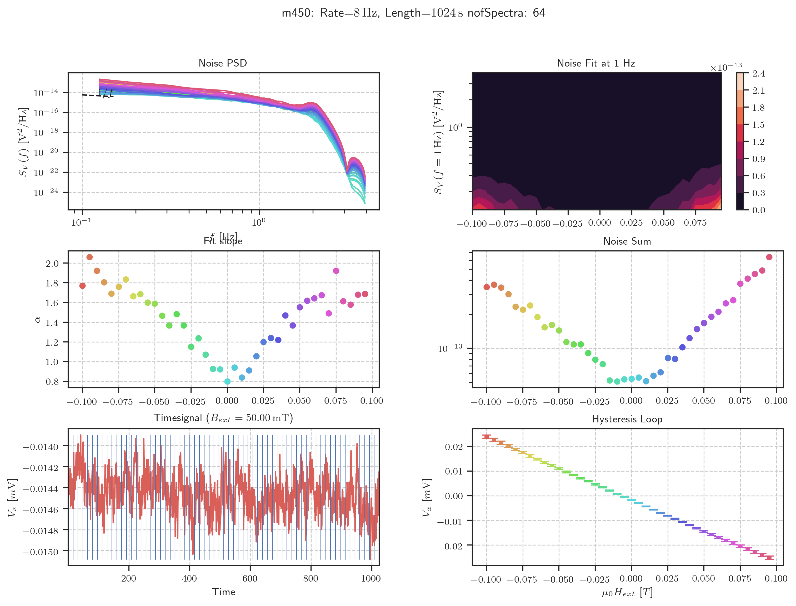
Plot First and Second Spectrum
[ ]:
eva.set_sns(notebook=True, size='notebook', grid=True)
for nr in [437]:
plot_first_and_second(df[nr], spec[nr], nr=nr)
plt.savefig('m%s_first_and_second_nofSpectra-%s.png' % (nr, num))
Plot Second Spectrum of specific fields
[692]:
eva.set_sns(notebook=True, palette='Paired', grid=True)
nr = 452
fields = [.0, .015, .03, .165]
fig, (ax, ax2) = plt.subplots(2)
for f in fields:
for octave in range(spec[nr][f].spectrum.number_of_octaves):
ax.plot(spec[nr][f].spectrum.frequency_span_array_second_spectra,
spec[nr][f].spectrum.second_spectra[octave],
label='$H_{ext} =$ %.3f; Oct: %d' % (f, octave))
ax2.plot(spec[nr][f].second_spectrum_time_array,
spec[nr][f].time_signal_second_spectrum_transposed_normalized[octave],
label='$H_{ext} =$ %.3f; Oct: %d' % (f, octave))
ax.set_yscale('log')
ax.set_xscale('log')
ax.set_title('m%s: Second Spectrum Frequency domain' % nr)
ax2.set_title('Second Spectrum Time domain')
eva.set_sns(size='paper')
ax2.legend(loc='upper right', ncol=2)
plt.savefig('m%s_second_spectrum_fields.png' % nr)
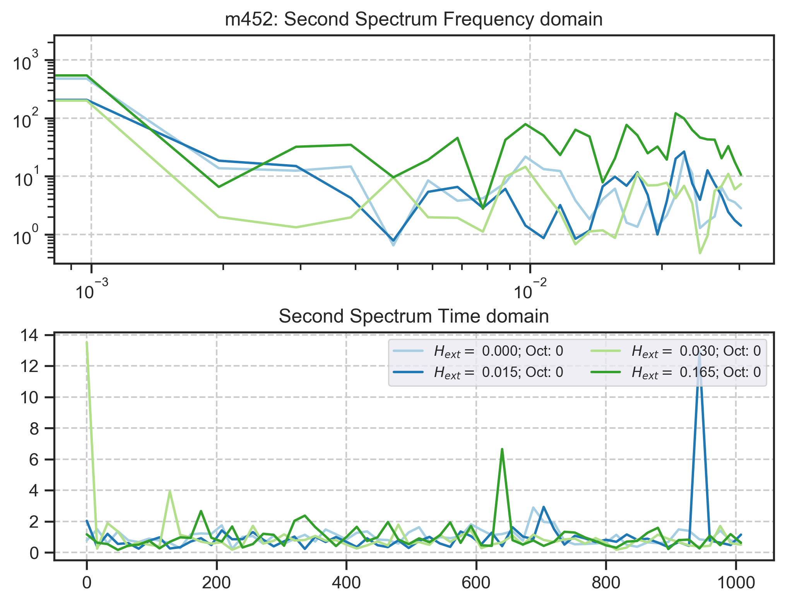
Plot Time Signal
[694]:
#fields = [.01, .015, .02, .025, .03, .04, .045]
eva.set_sns(notebook=True, palette='Paired', grid=True)
fig, ax = plt.subplots()#len(fields))
eva.set_sns(notebook=True, size='paper')
for i, f in enumerate(fields):
signal = df[nr].query('Field == %.4f' % f)
ax.plot(signal.Time, signal.Vx, label='$H_{ext} = %s\\,\\mathrm{mT}$' % (f*1e3))
ax.legend(loc='upper right', framealpha=.7)
ax.set_title("m%s: Time Signal" % (nr))
plt.savefig("m%s_Timesignal.png")
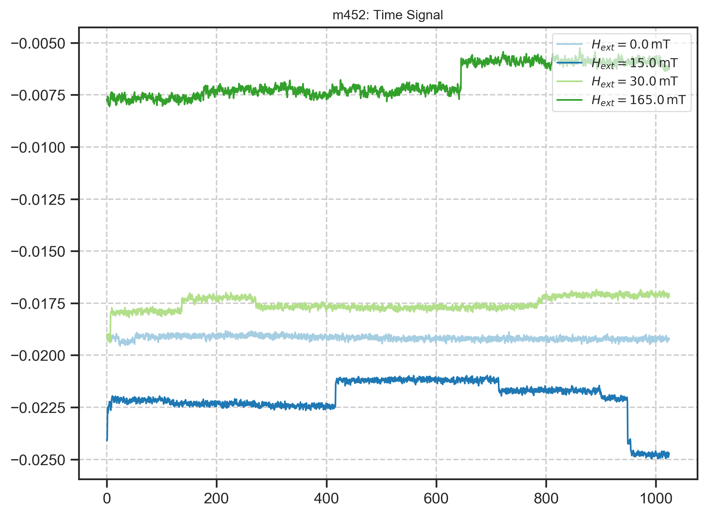
[693]:
eva.set_sns(notebook=True, grid=True)
signal = df[nr].sort_values('Field').query('Field >= .0 and Field <= .06')
for f in signal.Field.unique():
tmp_plot = df[446].query('Field == %s' % f)
plt.plot(tmp_plot.Time, tmp_plot.Vx)
fig, ax = plt.subplots()
sns.violinplot(x='Field', y='Vx', data=signal, ax=ax)
[693]:
<matplotlib.axes._subplots.AxesSubplot at 0x1ec08dc9198>
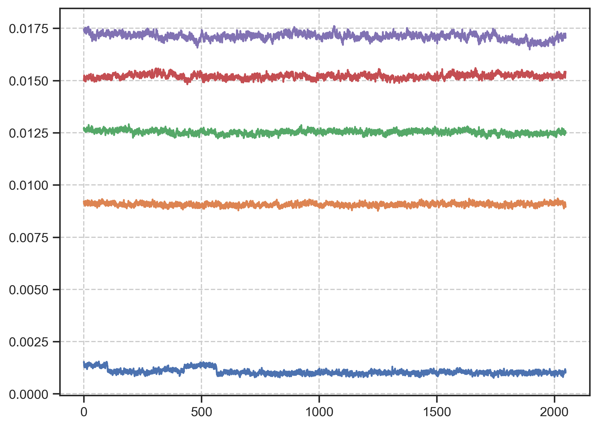
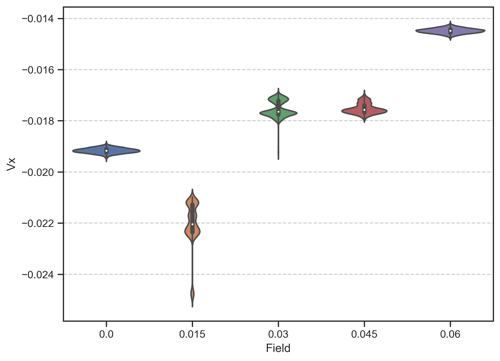
Plot Noise Spectrum Hysteresis
[42]:
ana.set_sns(notebook=True, size='poster', palette='Paired', grid=True)
nr1, nr2 = 484, 485
plot_spectrum_hyst(nr1, nr2)
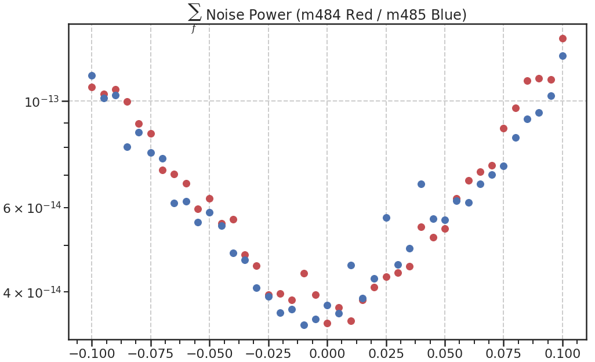
Cut and Paste Timesignal (multiple Measurements)
Test to put multiple measurements together
[195]:
query = meas_info.query('Rate == 8 and Preamp == False and Struct == "Plusses" and ' +\
'Voltage == 5 and Angle == 45 and Dir == "Up"')
raw_data = {}
query_fields = []
for nr in query.index:
files = glob('data/Data/m%s/*' % nr)
regex = ".*[Mm]([0-9.]*)_([A-Za-z]*)_([0-9.-]*)deg_([A-Za-z]*)_" \
+"([A-Za-z]*)_*B_([0-9.-]*)T_([0-9]*)_([0-9]*)_" \
+"I1-([0-9\-]*)_I2-([0-9\-]*)_GBIP.-([0-9\-]*)_" \
+"Vin-([0-9.]*)V_R11-([0-9]*.)O_R12-([0-9.]*.)O_" \
+"R13-([0-9.]*.)_R21-([0-9.]*.)O_" \
+"C11-([0-9]*)_C21-([0-9]*)_" \
+"T-([0-9]*)K.*"
raw_data[nr] = {}
for f in files:
reg = re.match(regex, f)
if not reg:
logger.error("Regex doesn't match filename: %s" % f)
continue
nr2, struct, deg, type1, \
type2, field, date, time, \
i1, i2, lock_in, \
vin, r11, r12, r13, r21, \
c11, c21, Temp = reg.groups()
field = float(field)
if field not in query_fields:
query_fields.append(field)
data_df = pd.read_csv(f, sep='\t')
raw_data[nr][field] = data_df
[225]:
eval_data = {}
for field in query_fields:
if abs(field) > .08:
continue
eval_data[field] = pd.DataFrame({'time':[], 'Vx':[], 'Vy':[]})
for nr in query.index:
if field in raw_data[nr].keys():
if not eval_data[field].empty:
raw_data[nr][field]['time'] += eval_data[field]['time'].max()
eval_data[field] = pd.merge(eval_data[field], raw_data[nr][field], how='outer')
[238]:
eval_spectrum = {}
for field in eval_data.keys():
d = eval_data[field]['Vx']
if len(d)%1024:
d = d.iloc[:-(len(d)%1024)]
data = {'data': d,
'info': {
'nr': nr,
'field': field
}
}
eval_spectrum[field] = eva.RAW_Measurement(data,
rate=1/eval_data[field]['time'].diff().mean(),
nof_first_spectra=64,
calc_first=True,
calc_second=True
)
E:\Nextcloud\Uni\Evaluate\spectrumanalyzer.py:825: RuntimeWarning: invalid value encountered in true_divide
second_spectra = second_spectra.transpose()
E:\Nextcloud\Uni\Evaluate\spectrumanalyzer.py:856: RuntimeWarning: divide by zero encountered in log10
frequency_span_array_second_spectra > 0])
E:\Nextcloud\Uni\Evaluate\evaluate.py:875: RuntimeWarning: invalid value encountered in true_divide
time_signal_second_spectrum_transposed[p])
[240]:
fit_range = 50
fig, (ax1,ax2,ax3) = plt.subplots(3)
for cur_field, cur_spectrum in eval_spectrum.items():
s = cur_spectrum.avg_spec
# Fitting alpha
s['lnf'] = np.log10(s.freq)
s['lnS'] = np.log10(s.S)
f = scipy.stats.linregress(s.lnf.iloc[:fit_range],
s.lnS.iloc[:fit_range])
ax1.plot(cur_field, -f.slope, 'o')
ax2.plot(cur_field, 10**f.intercept, 'o')
ax3.plot(cur_field, s.S.sum(), 'o')
ax2.set_yscale('log')
ax3.set_yscale('log')
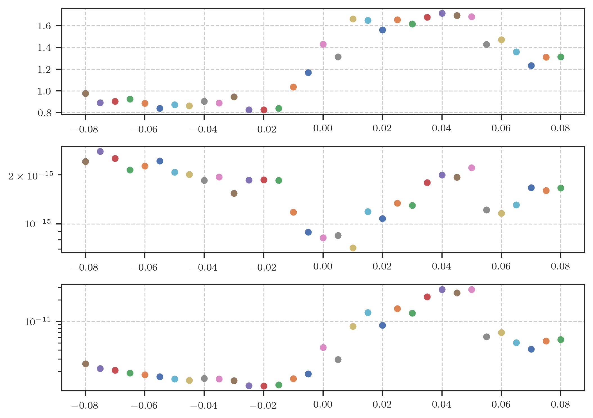
Evaluating m456 (multiple measurements at 0 field)
[705]:
nr = 456
files = glob('data/Data/m%s/*' % nr)
m456_df = pd.DataFrame({'time':[], 'Vx':[], 'Vy':[]})
for f in files:
tmp_df = pd.read_csv(f, sep='\t')
if not m456_df.empty:
tmp_df['time'] += m456_df['time'].max()
m456_df = pd.merge(m456_df, tmp_df, how='outer')
d = m456_df['Vx']
if len(d)%1024:
d = d.iloc[:-(len(d)%1024)]
data = {'data': d,
'info': {
'nr': nr,
'field': field
}
}
m456_spectrum = eva.RAW_Measurement(data,
rate=1/m456_df['time'].diff().mean(),
nof_first_spectra=64,
calc_first=True,
calc_second=True
)
First Spectrum
[309]:
eva.set_sns(size='notebook', style='ticks', grid=True)
s = m456_spectrum.avg_spec
fit_start = 50
fit_range = 1300
fig, (ax1) = plt.subplots()
# Fitting alpha
s['lnf'] = np.log10(s.freq)
s['lnS'] = np.log10(s.S)
f = scipy.stats.linregress(s.lnf.iloc[fit_start:fit_range],
s.lnS.iloc[fit_start:fit_range])
ax1.loglog(s.freq, s.S)
ax1.loglog(s.freq.iloc[fit_start:], 10**(f.intercept)*s.freq.iloc[fit_start:]**f.slope)
print("Slope:\t%.3f\nInterc:\t%.4e\nSum:\t%.4e" % (f.slope, 10**f.intercept, s.S.sum()))
Slope: -0.742
Interc: 2.8610e-15
Sum: 3.0521e-11
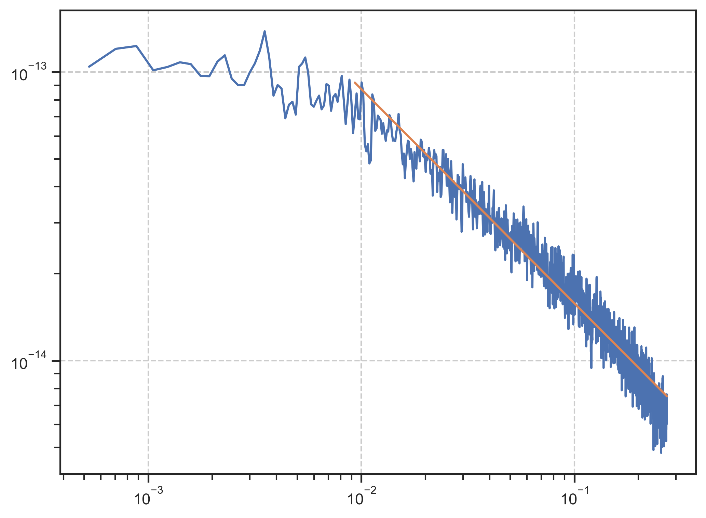
Histogram
[302]:
sns.distplot(m456_spectrum.timesignal)
[302]:
<matplotlib.axes._subplots.AxesSubplot at 0x1ec92065390>
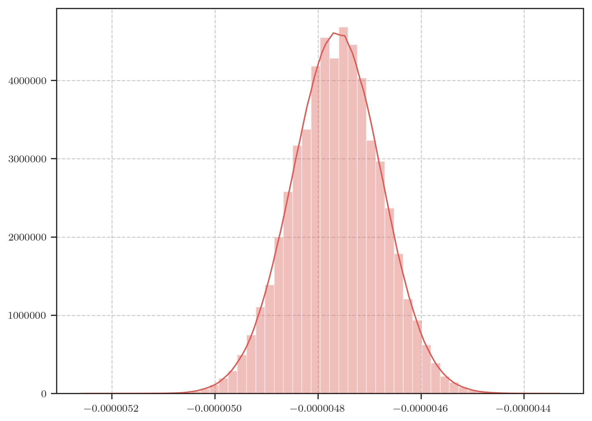
Second Spectrum
[710]:
eva.set_sns(notebook=True, palette='Dark2', grid=True)
sns.set_palette('hls', m456_spectrum.spectrum.number_of_octaves)
nr = 456
fig, (ax, ax2) = plt.subplots(2)
for octave in range(m456_spectrum.spectrum.number_of_octaves):
ax.plot(m456_spectrum.spectrum.frequency_span_array_second_spectra,
m456_spectrum.spectrum.second_spectra[octave],
label='Oct: %d' % (octave))
ax2.plot(m456_spectrum.second_spectrum_time_array/(60*60),
m456_spectrum.time_signal_second_spectrum_transposed_normalized[octave],
label='Oct: %d (%.3e Hz)' % (octave, m456_spectrum.spectrum.octaves[octave]))
ax.set_yscale('log')
ax.set_xscale('log')
ax.set_title('m%s: Second Spectrum Frequency domain' % nr)
ax2.set_title('Second Spectrum Time domain')
ax2.set_xlabel("Time [hrs.]")
eva.set_sns(size='paper')
ax2.legend(loc='upper right', ncol=2)
plt.savefig('m%s_second_spectrum.png' % nr)
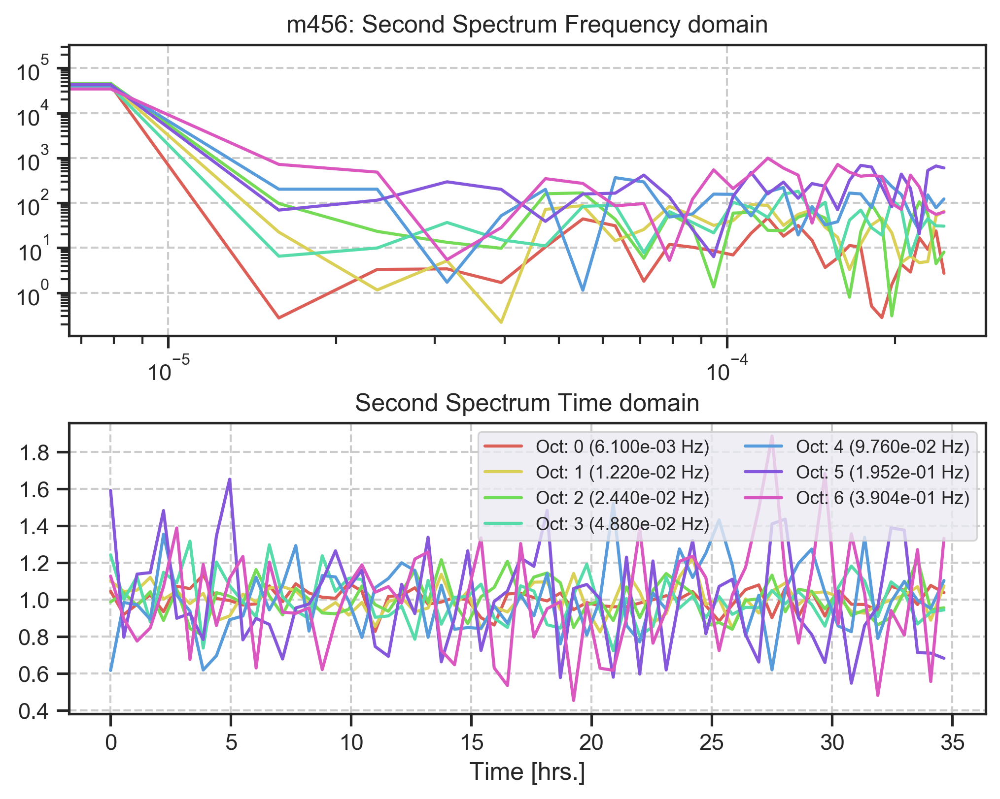
[ ]: